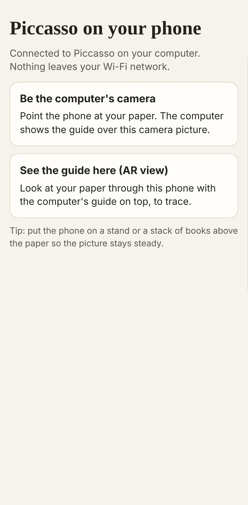
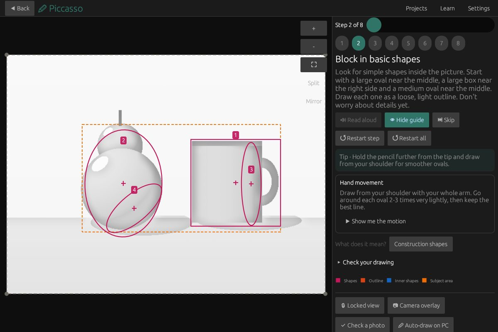

Draw anything, one easy step at a time.
Pick a picture. Piccasso finds its shapes, tells you where to put your pencil and how hard to press, and keeps the guide steady while you draw on real paper.
Steps made for your picture
Piccasso studies the picture you choose: where the subject sits, which simple shapes build it, where the light comes from and where the darkest shadows are. Then it writes instructions in plain words, like “start with a large oval near the middle”.
Each step shows only what you need right now, with a short tip, a check-your-work list and the drawing words explained when they come up.
Pick a picture
A photo from your phone, a new camera shot, or the built-in demo. Crop, rotate and mirror it.
Choose a style
Pencil sketch, clean outline, basic shapes or a shading map, at Very Easy up to Detailed.
Draw on paper
Follow one step at a time. Mark the page, block in shapes, outline, then shade.
How hard to press, which pencil, which way to move
Shading is where beginners get stuck, so Piccasso counts the tones in your picture and tells you the pressure and pencil grade for each one, and where in the picture it belongs.
- Show me the motion animates each stroke with a pencil: where to start, which direction, in what order.
- Hand tips for every step: draw ovals from the shoulder, outlines from the elbow, details from the fingers.
- Drawing in colour? You get the picture's palette by name and a colouring step that layers light to dark.
Your paper, your size
Choose A4, A5, Letter or a sketchbook, or type the exact size of your paper in centimetres. Piccasso works out how big the drawing will be, where the margins go and, if you like the grid method, how many squares to draw.
Not sure how big your paper is? Hold a bank card against the screen to calibrate an on-screen ruler.
A guide that stays put
Locked reference mode keeps the picture exactly where you set it. Bumps, palm touches and pinches don't move it, the screen stays awake, and unlocking takes a deliberate press and hold.
Back-to-step and exit stay one tap away, and a session timer keeps track of your practice.
Trace through your camera
Point your phone at the paper and see the guide on top of it. Line up the four paper corners once and the guide sits in true perspective. On phones with ARCore, Piccasso uses real AR surface tracking.
On a computer, your phone can be the camera: scan a QR code and the phone streams its view to Piccasso over your own Wi-Fi. Or flip it around and use the phone as an AR viewer for the guide on your computer.
the guide is drawn on the screen, not projected onto the paper

Auto-draw in any drawing app
On the desktop app, mark the corners of a canvas in Paint, Krita, Photoshop or an online whiteboard, and Piccasso moves your real mouse to draw the outline for you: fast, in an order that keeps pen lifts short, with every line closed.
Moving the mouse yourself stops it instantly and releases the button.
An exact replica, shading included
Show Piccasso where your program's brush, brush-size slider and opacity slider are: hover over each tool, or click it on a full-screen view of your screen. For every shade it sets the brush and opacity, traces the shade's outline, then fills it without lifting the pen, so edges are smooth and overlaps never darken.
Before you start, it simulates the finished picture with your brush size and shows how closely it will match. In our test it painted the demo in under 3 minutes, with 96% of the pixels within one shade of the picture.
no opacity control? lighter shades get sparser strokes, like one pencil
One project, two apps
The web app installs on any phone or computer and works offline. The desktop app is native Rust. Both read and write the same project file, so you can start on one and finish on the other.
| Feature | Web app (phones, tablets, browsers) | Desktop app (Windows, macOS, Linux) |
|---|---|---|
| Guided steps, styles, difficulty | yes | yes, identical results |
| Pressure, shading and colour guidance | yes | yes |
| Hand-motion animation | yes | yes |
| Locked reference, screen awake | Screen Wake Lock where supported | Operating-system sleep prevention |
| Camera tracing | Camera overlay everywhere, real AR on ARCore phones | Webcam or your phone as camera; phone as AR viewer |
| Auto-draw with the mouse | Not possible in a browser | yes |
| Exact replica with shades and opacity | Not possible in a browser | yes, clicks your brush and opacity tools |
| Check a photo of your drawing | yes, on the device | yes, on the device |

Get Piccasso
Your pictures stay on your device. Nothing is uploaded, and Piccasso uses no AI: every guide comes from image processing and geometry you can trust.
Desktop app (PC)
Guided steps, locked reference, phone camera as a projector, and auto-draw into any drawing program with your real mouse: shading, colour and every line.
Download for Windows macOS Linux Linux ARM
Windows: unzip and run piccasso.exe (choose "More info → Run anyway" if SmartScreen asks; the app isn't code-signed). To draw into a program running as administrator, run Piccasso as administrator too. macOS (Apple Silicon and Intel): drag Piccasso.app to Applications, then right-click → Open the first time (it isn't notarised); allow Accessibility (mouse) and Screen Recording (colour detection) when asked. Linux: unpack and run ./piccasso, or ./install-linux.sh to add it to your app menu.
Build it yourself
cd rust cargo run --release -p piccasso-app
Web app (phone, tablet, any browser)
Steps, shading and colour guides, locked reference that keeps the screen awake, and camera tracing. Choose “Install” or “Add to Home Screen” for an app icon and offline use.
Host it yourself
python3 -m http.server 8080 -d web